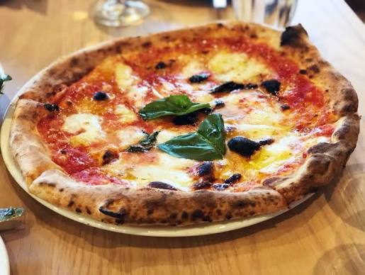
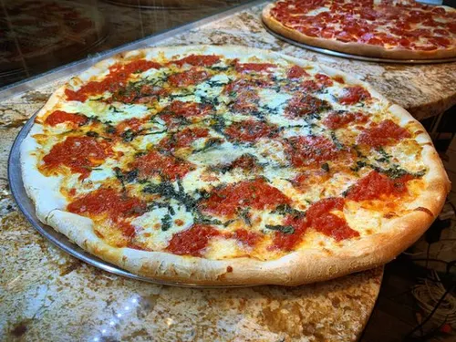
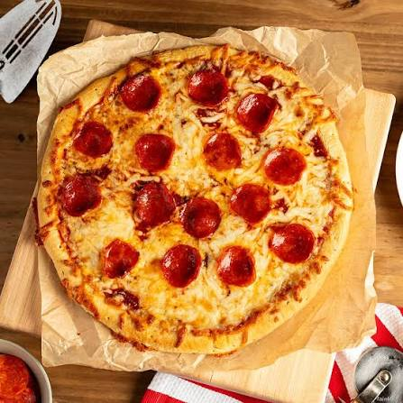

Pizza

Introduction
Pizza is one of the world's most popular dishes, born in Naples, Italy, in the 18th–19th centuries as a cheap meal for workers. Italian migration spread it worldwide, giving rise to styles like New York and Chicago pizza. In 2017, UNESCO recognized the art of Neapolitan pizzaiolos as Intangible Cultural Heritage.

Description
A fresh pizza looks golden and bubbly, with a puffy, slightly charred crust and melted cheese over red tomato sauce. It smells warm and savory, with baked bread, tomato, garlic, and herbs like oregano or basil. It tastes rich and balanced: tangy tomato, creamy, salty cheese, and a soft, chewy crust with a crisp edge.

My Opinion
I think pizza is hard to beat. It's simple, flexible, and made for sharing. A good Margherita shows that a few quality ingredients can be better than a complicated dish. My one firm stance is that the crust matters most: great toppings can't save a bland, doughy base. Pineapple is a matter of taste, so I'd say let people enjoy it.